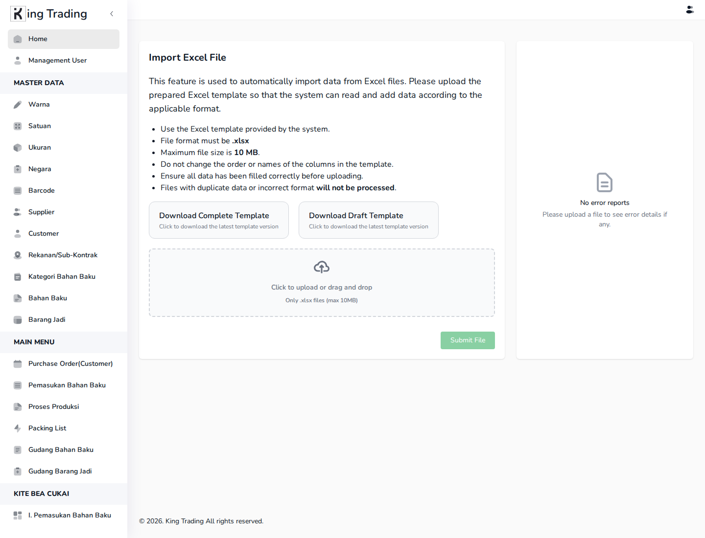
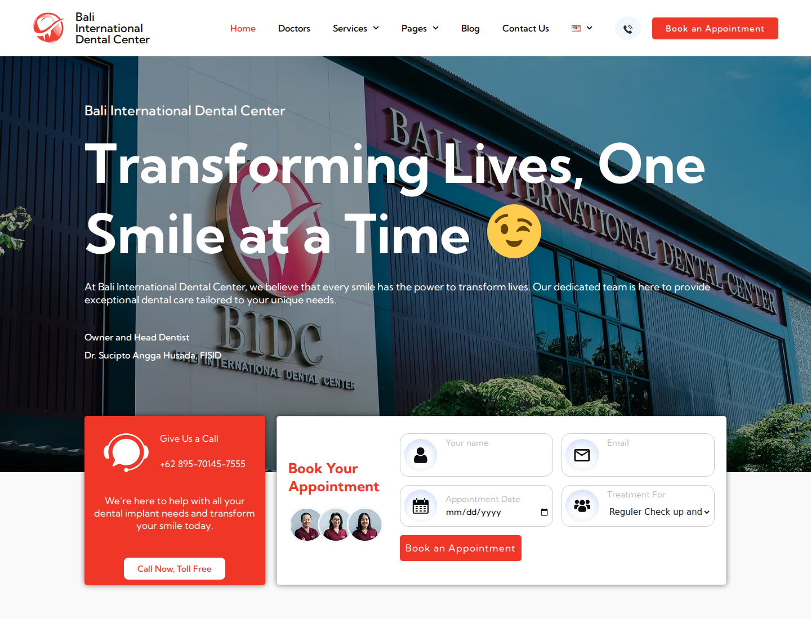
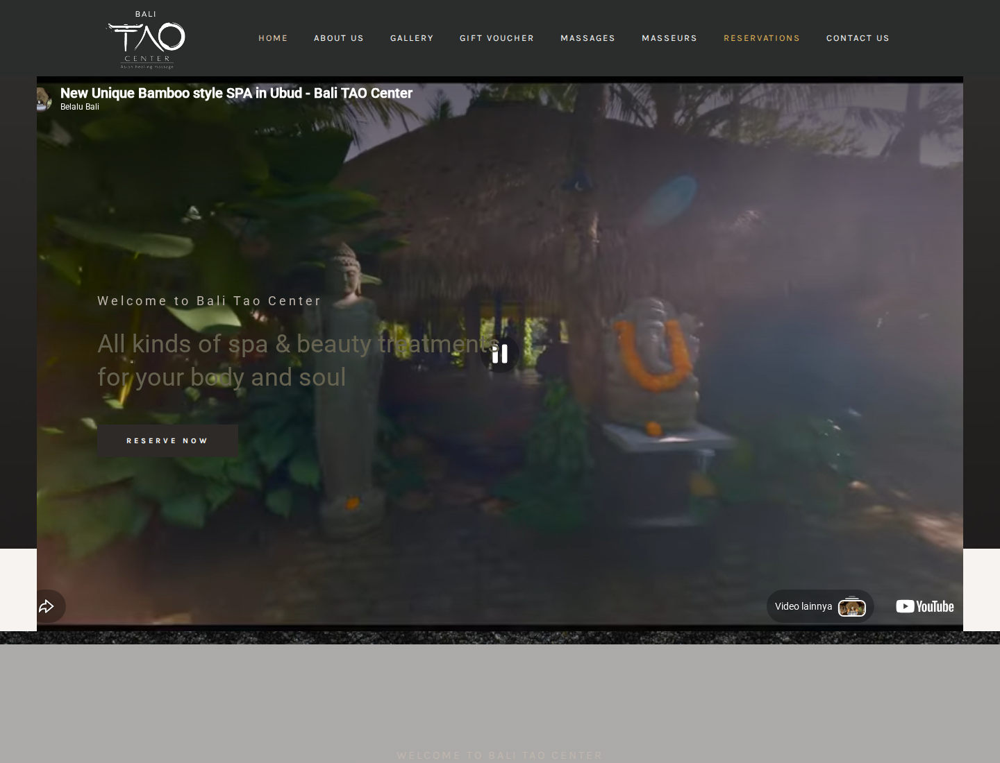
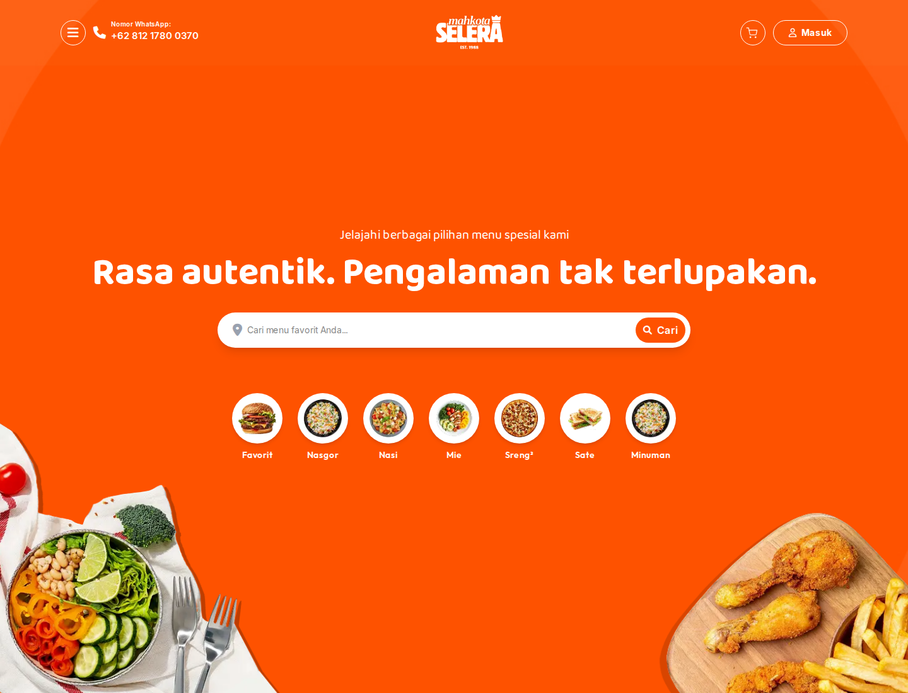

Clarify the task
Define users, decisions, states, and the conditions that count as success. Before designing a screen, agree on what the screen has to settle.

Bali · software house
We turn repeated tasks, messy handoffs, and scattered spreadsheets into web apps, dashboards, booking tools, and product websites.
process
We start with the job users need to finish, then design the shortest path through the product.
Define users, decisions, states, and the conditions that count as success. Before designing a screen, agree on what the screen has to settle.
Turn the task into screens, hierarchy, and interaction rules. The prototype answers movement and shape before we touch a single pixel of polish.
Develop the interface, data paths, responsive behavior, and edge states. The system is real software, in production, not a demo.
Adjust copy, layout, and logic before release. Watch real users finish the task; ship the version that actually works for them.
services
Web apps, admin portals, booking systems, and internal tools — for teams outgrowing manual coordination or one-size-fits-all software.
Flows, wireframes, components, and responsive states. The structure your team can keep building on after we hand it over.
Readable data views for operations, inventory, and reporting. Built to be scanned, not stared at.
Product pages, company profiles, and launch pages that explain the offer fast — without the usual marketing-template feel.
selected work

Authenticated operational dashboard for import, inventory, and KITE reporting workflows. Built for the operators who actually run the numbers, not the people who quote them.



start with a brief
Send the current process, a rough screen, or the tool your team has outgrown. We will suggest the first build scope.
Send the brief